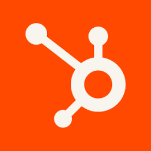

Intelligent Systems that run your Business.
Build, deploy, and manage workflows that connect your tools and run your operations — automatically.
Works with the tools you already use
 Slack
Slack
 OpenAI
OpenAI
 Notion
Notion
 Stripe
Stripe
 Shopify
Shopify
 HubSpot
HubSpot
 Airtable
Airtable
 GitHub
GitHub
 Gmail
Gmail
 Google Drive
Google Drive
 Twilio
Twilio
 Telegram
Slack
OpenAI
Notion
Stripe
Shopify
HubSpot
Airtable
GitHub
Gmail
Google Drive
Twilio
Telegram
Telegram
Slack
OpenAI
Notion
Stripe
Shopify
HubSpot
Airtable
GitHub
Gmail
Google Drive
Twilio
Telegram
What is Kryon
Workflows that run
your operations,
end-to-end.
Connect your tools. Tell Kryon what needs to happen. Workflows trigger automatically, move data at the right time, and complete every step across your stack — without anyone in the middle.
Uptime
First workflow live
Median ROI
Capabilities
Everything in one
platform.
From AI agents and no-code workflows to integrations, reporting, and managed support, Kryon gives you one place to run the operational layer of your business.



AI agents
When a workflow
isn't enough.
Some tasks need something smarter — agents that reason, decide, and act across your entire stack.
The old way
Workflows weren’t Built for complexity.
Legacy tools handle the expected. Every exception, every edge case, every curveball ends up back on a human. Your team becomes the fallback for software that cannot think.
The Kryon way
From Workflows to Autonomy.
Kryon agents don't follow flowcharts. They read context, make decisions, and complete the work — every time, without any human intervention required.
-
→
Handles any exception No edge case too complex for Kryon to reason through
-
→
No rules to write Describe the outcome — agents figure out the path
-
→
Self-correcting by design When something changes, Kryon adapts without you touching it
The hidden cost
You’re Paying Premium Salaries for Basic Tasks.
Operations teams spend the majority of their week on tasks that require no human judgment. That's not a staffing problem — it's a structural one. And it compounds every quarter.
The outcome
Stop Wasting Talent on Tasks Agents can Handle.
When Kryon takes the routine end-to-end, your people shift to strategy, relationships, and growth. You increase output without adding headcount — or burning out the team you have.
-
→
Capacity on demand Handle 10× the volume without 10× the team
-
→
Zero new hires required Kryon covers the routine — your team covers the strategy
-
→
ROI you can track Time saved, errors eliminated, and growth unlocked — all measurable
Meet Kryon agents
Your ops team's
unfair
advantage.
While your competitors manually stitch tools together, Kryon agents handle the hard stuff — reasoning, deciding, and acting across your entire stack.

Privacy by design
Your data never
leaves your
stack.
Kryon connects to your tools, reads what it needs to act, and executes. That's it. We never store, copy, or index your data. Everything stays exactly where you put it — in the systems you already trust.
We handle the actions.
You keep the data.